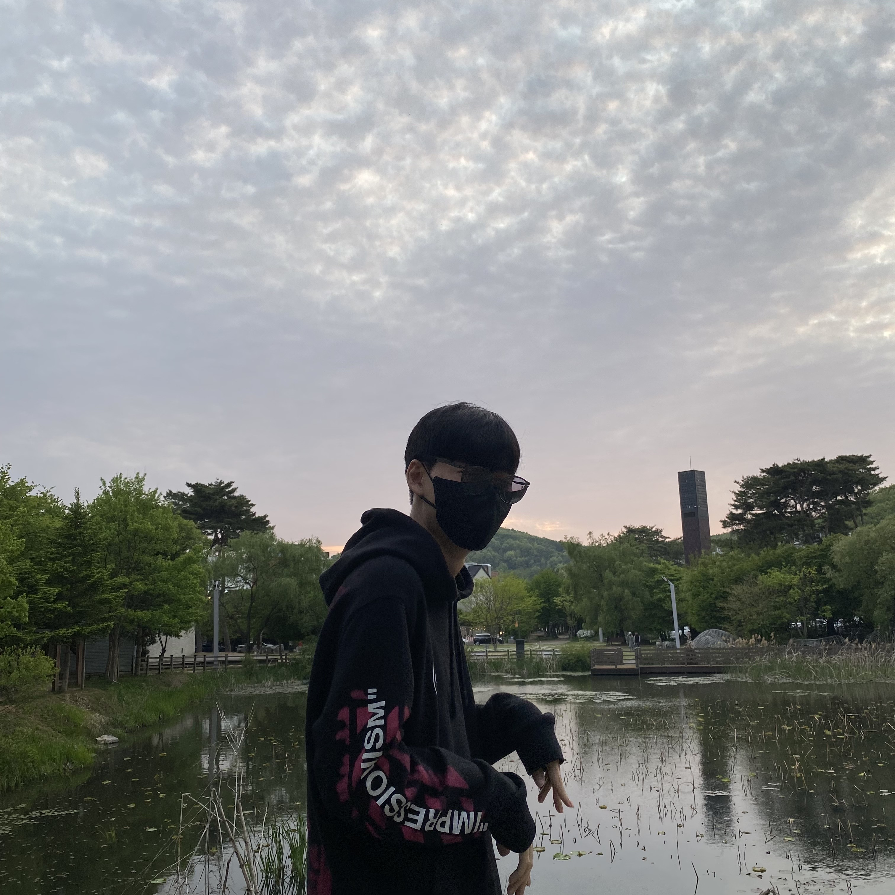

최형우(Choi Hyeung Woo)
이메일:alexchoi111@nate.com
Who I am?

저는 호서대학교 디지털기술경영학과에 재학중이고 웹프로그래밍 관련 분야에 대해 공부를 하고 있는 최형우입니다.
전 과는 다르게 지금은 첫주차보다는 아주 조금은 html5,css에 대해 이해를 했고 무엇을 배웠는지에 대해 말을 할 수 있을 정도까지 왔습니다.
그러나 html5와 css는 배우면 배울수록 뭔가 이 정보에 대해 더 멀어지는 느낌이 들만큼 엄청 깊은 분야라는 것을 깨달았습니다.
그에 대해 저는 수업을 더 잘 들어야 한다는 생각이 들었고 타 분야보다 배울수록 더 흥미가 깊어지는 분야입니다.
처음에는 깃허브 사이트가 너무나 다루기가 어려워 교수님께 많은 문자와 연락을 보내었었고 결국 사이트 개설을 성공하였습니다.
그 이후 부터는 파죽지세로 수업 내용을 흡수 할수 있었고 과제 또한 수월히 진행할 수 있었습니다.
그리고 수업과 병행되는 팀플 프로젝트에 대해서도 어느 정도 만드는 것으로 수업외에도 가끔은 유튜브로 html영상을 보기도 합니다.
마지막까지 이 분야에 대해 흥미를 놓지 않고 더 나아갈 수 있도록 수업에 임하겠습니다.
Skills
사용언어
사용 툴
visual studio code(2 months)
Academic
학력 사항
| 출신학교 |
전공 |
기간 |
졸업구분 |
이미지 |
영동고등학교 |
(해당사항 없음) |
2015.3~2018.2 |
졸업 |
 |
호서대학교 |
디지털기술경영 |
2018.3~ |
재학 |
 |